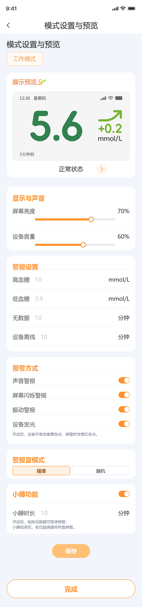

选择血糖单位
设备和 App 将按所选单位显示血糖值。
mmol/L
mg/dL
选择后仍可在“我的”中修改。
用户第一次绑定设备时选择一次，减少后续设备屏幕和 App 单位不一致的风险。
设备和 App 将按所选单位显示血糖值。
基于现有页面新增显示与声音、报警方式、警报音模式和小睡功能。

承载后续修改血糖单位、AI 资料入口和账号相关功能，避免继续挤在设备设置页里。
从“我的”进入，修改后同步影响 App 与设备展示。
设备和 App 将按所选单位显示血糖值。
不放在注册后强制填写；仅当用户启用 AI 功能时，为了让 AI 理解用户背景再填写。
完善基础信息后，糖宝可结合您的血糖与健康资料，提供更个体化的分析与建议。
本期只承载已实现的密码相关能力，不扩展更多账号安全项。
关闭后，设备可能无法在血糖异常时提醒你。建议至少保留一种报警方式。